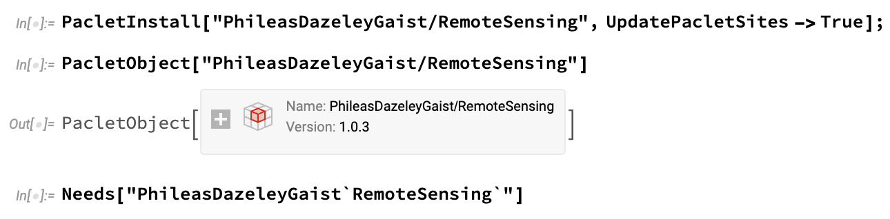
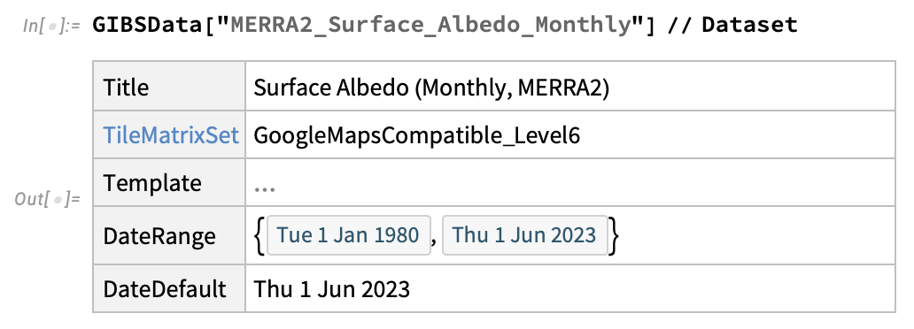
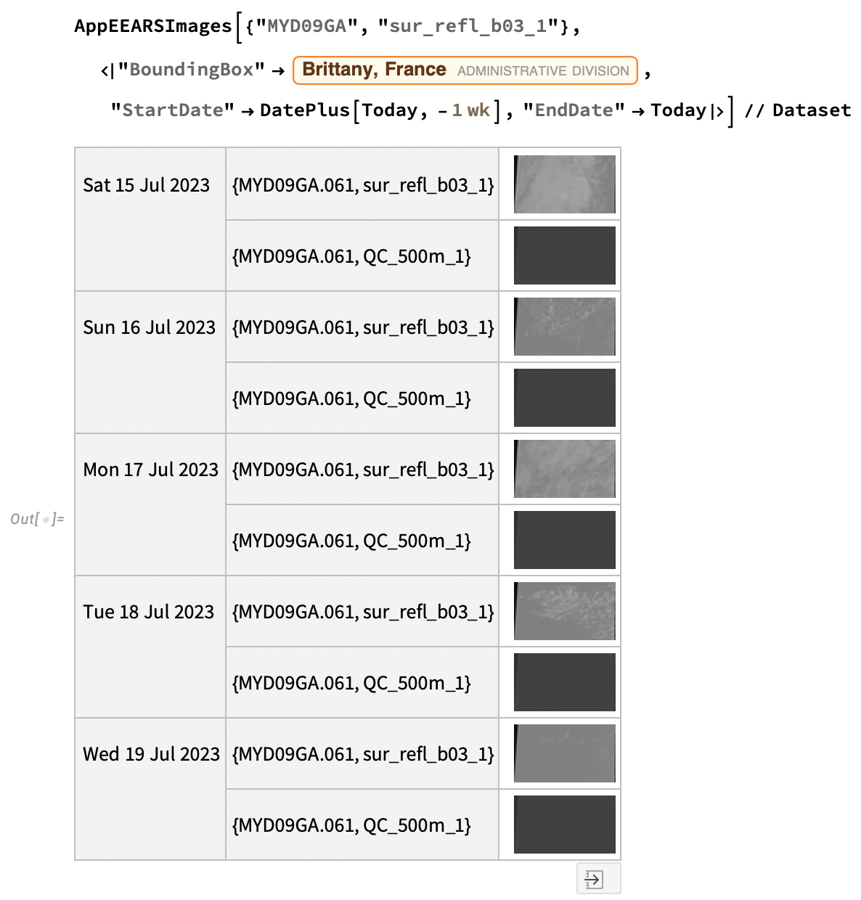

This summer, I was fortunate to attend the Wolfram Summer School at Bentley University in Waltham MA. It was a fast-paced, intense, challenging and exciting experience, and I am grateful to all who contributed to making it such a motivating and worthwhile three weeks.
The Wolfram Summer School is an educational program hosted by Wolfram Research, the company behind Wolfram Alpha, Mathematica, and the Wolfram Language. It brings together students once a year to explore cutting-edge computational topics, problem-solving techniques, and hands-on projects using Wolfram tech. Students engage in collaborative learning, work on their projects with industry experts, and develop practical skills in computational thinking and programming.
At the heart of the program for each student is their summer school project. Students at the Wolfram Summer School choose (or are sometimes assigned) a project to work on in meetings with Stephen Wolfram and their summer school mentors. For my project, I decided to build as versatile and robust a remote sensing tool as I could for the Wolfram Language.
My project progressed quickly throughout the program with the help and guidance of my project mentor, Christopher Wolfram, whose support was crucial to my success. At the end of the summer school, I delivered a presentation on my work, as well as a post on the Wolfram Community forum, and a Wolfram Language paclet: RemoteSensing.
You can also view other WSS projects here.
Just a heads up: If you decide to try my paclet, be aware that it is and will likely continue to be a bit of a work-in-progress. I have found it to be quite robust, but you may encounter bugs, as well as service outages from the NASA GIBS and AppEEARS APIs. If you encounter issues with my paclet, including bugs or unclear documentation, please do not hesitate to contact me so that I may address them!
What is the RemoteSensing Paclet? The RemoteSensing paclet contains various functions that allow you make requests to the GIBS and AρρEEARS APIs for geographic products from various US federal agencies, and work with the returned data in the Wolfram Language. The RemoteSensing GIBS functions can be used with GeoImage and GeoGraphics through the GeoServer option, while the AρρEEARS functions can be used to request scientific grade geographic data product samples.
To install the RemoteSensing paclet to your version of Wolfram Language, you'll need to run the following lines of code:

The second line is not strictly necessary, but it will help you to make sure the paclet installed correctly, and you have the latest version (1.0.3 as of Jul 21 2023, when I am writing this blog post).
Once you have the paclet installed and imported into your active kernel session, it's ready to use! So let's see some simple examples of what that can look like.
Please note: Admittedly, this short blog post leaves out a fairly large number of things you can do with the RemoteSensing paclet. If you'd like to know more about what is possible with it (including making timelapse animations with NASA imagery), I strongly suggest you take a look at my Wolfram Community post about RemoteSensing, and the RemoteSensing paclet repository page.
The NASA GIBS (Global Imagery Browse Services) API is a web service provided by NASA used to access and retrieve satellite imagery and related data. The API provides an interface to access a vast collection of global Earth science data through WMTS (Web Map Tile Service).
GIBS provides raster tiles, which can be useful for visualisation and data exploration, but should be avoided for serious research, as it does not provide access to the raw layer data. Its advantages are that is is fast, pretty robust, and very flexible.
To request GIBS data using the RemoteSensing paclet, you'll make use of the following functions:
GIBSData which retrieves information about available GIBS layers.GIBSGeoServer which builds a GeoServer request template for a layer.Here's an example showing how you might use them:
Find a layer of interest:
Consult information about the layer:

Visualise layer using either GeoGraphics or GeoImage:

Customise your visualisation as you might with any other GeoGraphics or GeoImage plot:

And there you go! You've made a visualisation using a NASA GIBS WMTS product.
AρρEEARS is a geographic data access service provided by NASA. The AρρEEARS website describes it like so: “The Application for Extracting and Exploring Analysis Ready Samples (AρρEEARS) offers a simple and efficient way to access and transform geospatial data from a variety of federal data archives. AρρEEARS enables users to subset geospatial datasets using spatial, temporal, and band/layer parameters.”
AρρEEARS requires you to be signed in on NASA EarthData. Fortunately, it’s quite easy (and most importantly, free) to register an account, and the RemoteSensing paclet provides tools to log you in programmatically.
AρρEEARS allows you to access the real recorded data values for any available remote sensing product it offers. This makes it an appropriate tool to use if you are in need of accurate data for analysis or other scientific research. However, it is not so good for data exploration, as it can be fairly slow depending on the scale of the task and the availability of the API, and it will often return large numbers of heavy files. Use AρρEEARS if you already know what you want, and you need precise and accurate data.
To request AρρEEARS data using the RemoteSensing paclet, you'll make use of the following functions:
AppEEARSData which retrieves information about available AρρEEARS products and layers.AppEEARSImages which makes a request to AρρEEARS and returns the resulting data when it completes.Now, the AρρEEARS workflow is a little different because depending on your task, you might prefer to make an AρρEEARS request and work with it asynchronously. This is a little more involved, and although I will not show examples of it here, you can find some in my community post, and the paclet documentation.
Get a list of available AρρEEARS products with AppEEARSData:

Get information about a product:

The above dataset contains the names of available AρρEEARS layers for the MYDO9GA product. Now, to request information about a specific layer, you might do this:

And you might make a request for AρρEEARS imagery using AppEEARSImages like this (note that this might take some time to process):

If you've read this far, I hope this blog post has inspired you to try my paclet for yourself. Just take a chance to mess around with it! I am actively working to maintain and improve it, and I am always excited to receive feedback about my work! If you find bugs or have suggestions for its improvement, please don't hesitate to be in touch with me! I look forward to your notes!